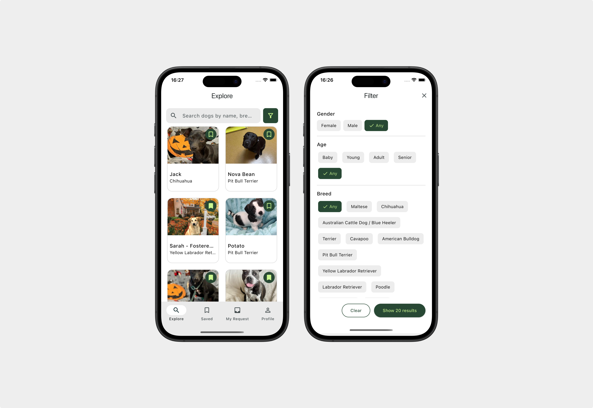

Mobile Computing
- Type Group Project
- Course Mobile Computing
- Contribution UX Design, UI/UX Development
- Tools Figma, Flutter & Dart, Material Design

Project Description
This project involved the design and implementation of a cross-platform mobile application built with Flutter and Dart. The app connects to an API to fetch real-time data about available dogs, including their profiles, breed and age. Users can browse listings, submit adoption requests, and track their request history directly within the app.

Design System
Our Design System is grounded in Material Design, using its clear structure and predictable patterns to create an experience that feels intuitive and consistent across the app. By relying on standardized components for navigation, typography, and spacing, we ensured a cohesive interface that can scale smoothly as new features are added.
At the same time, we customized the system to reflect our own visual identity. We introduced a tailored color palette, refined typography, and subtle adjustments to component shapes, allowing the app to feel unique while still benefiting from Material Design’s usability principles. This balance between consistency and customization helped us build an interface that is both reliable and distinctly ours.